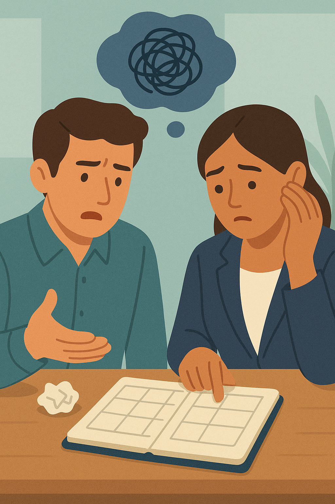
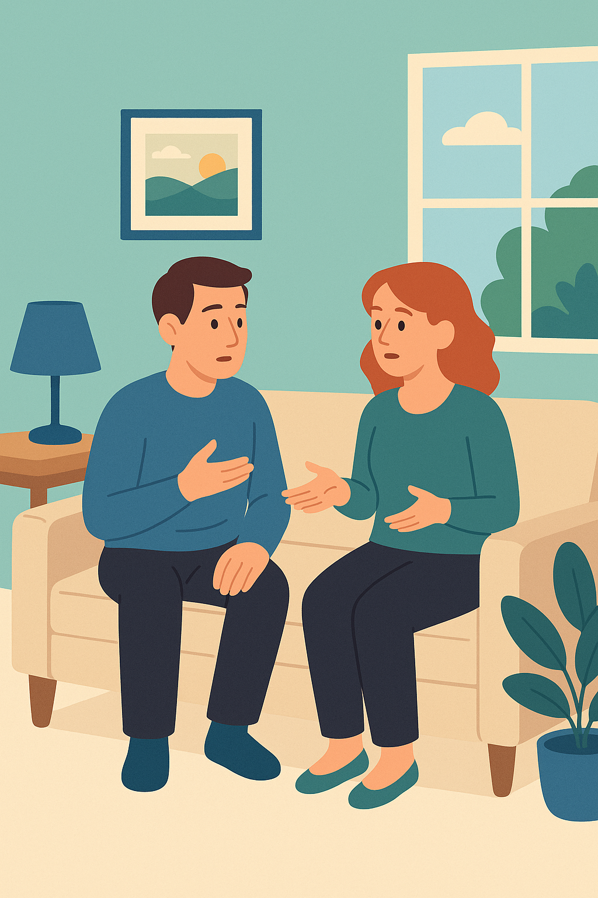

Grammar Focus: Conditional Sentences 🧠
Why Conditionals Matter in the Workplace
Conditional sentences help you explain cause-and-effect, give advice, or imagine solutions to workplace challenges, like those in the reading Common Problems at Work. They structure how we think about real problems (e.g., poor communication) and possible fixes (e.g., listening actively). For example:
- If you don’t communicate clearly, mistakes happen.
- If I had better work-life balance, I’d feel more motivated.
Let’s explore three conditional types, using examples from the reading to connect grammar to workplace communication.
🎧 Complementary Audio – Guided Explanation
This audio supports you as you go through the lesson. Listen to it for a step-by-step explanation with spoken examples. It’s especially helpful if you prefer learning by listening or want to review while doing other tasks.
Zero Conditional: Workplace Truths

Use the zero conditional for general truths or routines that always occur under specific workplace conditions.Structure: If + present simple, present simple
Examples (from reading):
- If employees don’t communicate clearly, mistakes happen.
- If workers resist change, stress increases.
- If teams cooperate, pressure decreases.
Purpose: Describe consistent workplace rules or consequences.
Note: Use “when” instead of “if” for routines (e.g., When conflicts arise, communication helps).
First Conditional: Realistic Solutions
Use the first conditional for likely outcomes or practical solutions to workplace issues in the present or future.
Structure: If + present simple, will + base verb
Examples (from reading):
- If you organize your tasks, you will reduce stress.
- If colleagues listen actively, conflicts will decrease.
- If you take regular breaks, you will improve motivation.
Purpose: Offer advice, predict results, or plan actions.
Tip: Use “can,” “may,” or “should” for variety (e.g., If you ask for help, you can manage your workload).
Second Conditional: Hypothetical Improvements

Use the second conditional for imaginary or unlikely scenarios, ideal for suggesting workplace improvements or giving polite advice.Structure: If + past simple, would + base verb
Examples (from reading):
- If we had better work-life balance, we would feel more motivated.
- If I were the manager, I would prioritize communication.
- If teams shared responsibilities, workers would feel less stressed.
Purpose: Suggest changes or reflect on alternatives tactfully.
Note: Use “were” for all subjects (e.g., If I were you, I’d talk to the supervisor).
Comparing Conditionals
Each conditional addresses workplace challenges differently:
| Type | Function | Example | Real or Imaginary? |
|---|---|---|---|
| Zero | Rules / Facts | If employees don’t communicate, mistakes happen. | Always true |
| First | Likely solutions | If you organize tasks, you’ll reduce stress. | Real / possible |
| Second | Hypothetical fixes | If we had better balance, we’d be motivated. | Imaginary / unlikely |
Practice: Communicate with Conditionals
Use these prompts, inspired by the reading, to create conditional sentences. Speak with a partner or write your answers:
- Workplace Rule: Describe a communication rule.
Example: If team members don’t listen, confusion happens. - Advice for Workload: Suggest a way to manage stress.
Example: If you prioritize tasks, you’ll feel more in control. - Ideal Workplace: Imagine a change to reduce conflicts.
Example: If we had open discussions, teams would collaborate better.
Discuss with a partner: How do conditionals help you solve workplace problems like those in the reading?